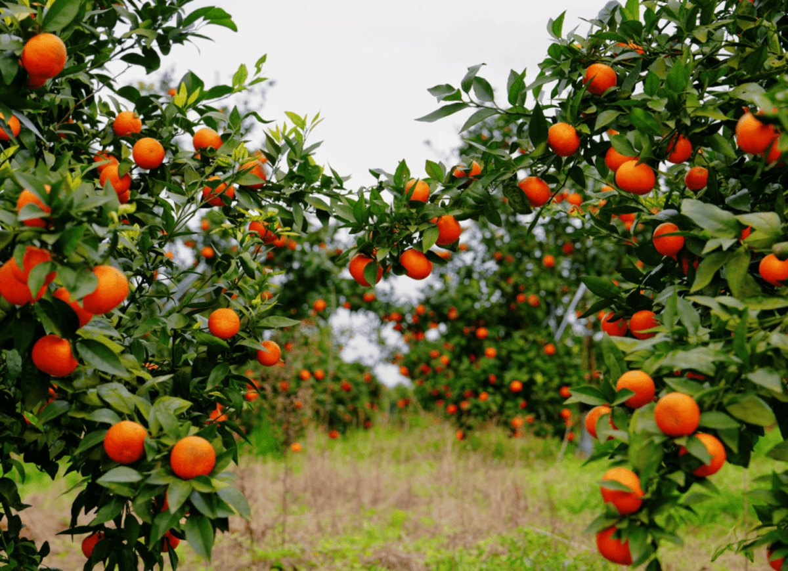

01
真实
产地、品种、采摘时间和管理方式，都应该能被清楚地讲述。不夸大，不模糊，不用“精品”两个字代替所有细节。
武陵果园不是一个凭空出现的品牌。它来自一次次的果园走访，来自果农对土地的经验，也来自一个朴素的念头：让好果子卖得更明白。

2025 年秋天，我们第一次走进湘西的一座猕猴桃园。果园的主人把最好的果子留给了老客户，却说不清这些果子到底好在哪里——没有种植记录，没有分级标准，也没有一个能讲给外地人听的“产地故事”。
这并非个例。武陵山区有太多品质不错的中小果园，它们缺的不是果子，而是把果子讲清楚、把订单管明白、把客户留下来的工具。
于是有了“武陵山区果园管理系统”：一个面向果园和合作社的轻量级数字化平台。前台让消费者看见产地，后台让管理者看清经营。我们把复杂的流程做简单，把分散的信息收拢到一处。
认识合作果园产地、品种、采摘时间和管理方式，都应该能被清楚地讲述。不夸大，不模糊，不用“精品”两个字代替所有细节。
平台的价值不只在卖出多少果子，更在于让果农获得稳定的订单和合理的价格，让果园愿意为长期品质投入。
不追求把每个果园都做成“网红”。尊重山地农业的节奏，用合适的数字化工具解决具体问题，而不是制造更多表格。
从一座果园的试探，到六座果园的同行。
十八洞高山猕猴桃基地完成首期种植，采用“合作社 + 农户”模式，为后续标准化管理打下基础。
团队开始帮助果园做分级包装和产地内容，第一批“武陵风物”礼盒走出大山。
在三个果园试点农事记录和订单台账，验证“一套表、一个码”的轻量管理方式。
“武陵山区果园管理系统”完成前台商城与后台管理模块开发，进入试运行，服务六座合作果园。
从田间到屏幕，每个环节都有人对结果负责。
负责果园走访、种植标准沟通与采摘批次确认。
把果园的真实流程翻译成顺手的页面和清晰的字段。
负责多页面网站、数据层、后台管理与部署维护。
覆盖核心业务流程测试，维护资讯、客服与用户反馈。